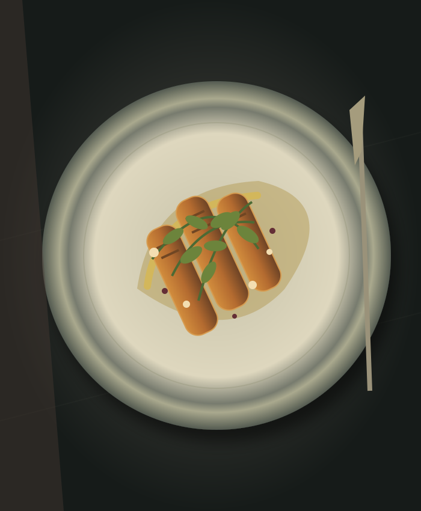

Seasonal Tasting
A considered journey through the season. Paired wines available.
- Pea velouté, mint oil
- Roasted market vegetables, herb jus
- Dark chocolate, seasonal berries
PRIVATE CHEF & CATERING · LONDON
Bespoke menus crafted for intimate dinners, celebrations, and corporate events.

YOUR OCCASION, MY KITCHEN
Trained at Le Cordon Bleu Paris and shaped by Michelin kitchens, Elise now brings restaurant-quality dining to private homes. The aim is simple: give you the freedom to enjoy your own evening.
Seasonal produce leads the menu. Local suppliers, careful preparation and a personal conversation about dietary needs shape everything that follows.
This fictional chef's biography is supplied by the brief. The demonstration focuses on personal service, menu planning and ingredient-led dining, rather than claiming verified training or awards.
BEFORE THE FIRST COURSE
Tell me your vision, guest count, and dietary needs.
I craft a menu tailored to your occasion and preferences.
I shop at trusted local suppliers and prep the day before.
I cook, plate, and serve in your home — you just enjoy.
WORDS FROM THE TABLE · ILLUSTRATIVE
★★★★★“Elise turned our anniversary dinner into something we'll talk about for years. Seven courses of pure magic.”
Claire & David H. · Anniversary · March 2026
★★★★★“Every detail felt considered, and for once I actually sat down with my guests.”
Illustrative guest · Private dinner
★★★★★“A generous table and a wonderfully calm evening. Exactly how a celebration should feel.”
Illustrative guest · Birthday celebration
FROM THE KITCHEN, TO YOUR TABLE
LET ME TAKE CARE OF DINNER
Every event is bespoke — get in touch to start the conversation.
Send an enquiry ↗Usually responds within 24 hours · Available across London & Home CountiesYOUR EVENING STARTS HERE
Prepare a local enquiry summary. Nothing is sent, saved or booked. Use example details when exploring.
Menu choices are illustrative. Allergies, kitchen access, staffing and a final price need a direct conversation.